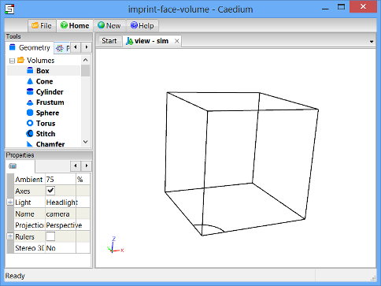
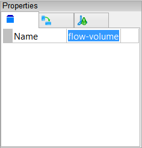
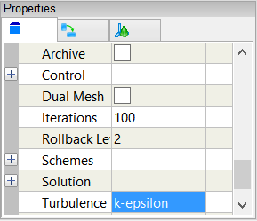
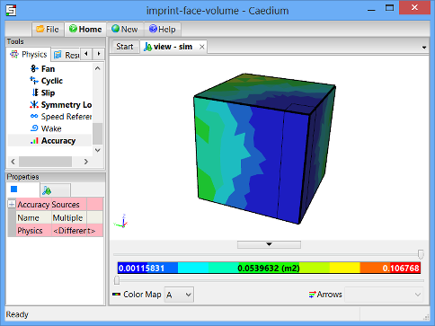

Incompressible Transient Flow with Heat Transfer
Simulate an incompressible transient (unsteady), buoyancy-driven (natural convection) flow with heat transfer. View velocity vectors, temperature iso-surfaces, and a temperature plot as the flow evolves over time.
Goals
In this tutorial, you will learn how to:
- Specify fluid conditions on a single volume for an incompressible, transient, buoyancy-driven flow simulation with heat transfer
- Change the turbulence model
- Specify boundary conditions on faces
- Specify meshing parameters
- Monitor residuals
- Generate velocity vectors
- Generate a volume temperature color map (iso-surfaces)
- Generate a temperature plot along an edge
Assumptions
- You have activated the Caedium RANS Flow add-on, or Caedium Professional.
- You are familiar with Caedium essentials.
- You have either:
- Created the geometry for this tutorial by following the tutorial "Imprint a Face onto a Volume"
- Imported the geometry (imprint-face-volume.brep) into Caedium — select the File Toolbar and click the Import button

The geometry within Caedium should appear as shown below with the Z direction upwards.

Prepare the Volume
Right-click an edge of the volume, double-click the first volume in the Select dialog and then select Properties from the menu. In the Properties Panel, select the Volume tab  and set the Name to flow-volume.
and set the Name to flow-volume.

To shade the geometry faces, right-click on the View Window (view) background, double-click sim->Faces, and then select Properties from the menu. In the Properties Panel, turn off the Transparent property to make all faces visible (shaded).
Shading the faces in the simulation will make it easier to select them when you configure fluid and boundary conditions.
Specify the Substance Settings
Specify the Fluid Conditions
Select the Physics Tool Palette. Select Gases->Air. The Properties Panel will show the default properties for air. To enable incompressible viscous flow the State->Rotational and State->Viscous properties should be set to Yes (their default values). The State->Compressible and State->Species properties should to be set to No (their default values).
For transient flow with heat transfer, set both State->Heat Transfer and State->Transient to Yes.
Drag and drop the Air tool onto a face of the flow volume. Select Done to set air as the fluid inside the flow volume.
Set the Turbulence Model for the Simulation
For turbulent flow, a turbulence model is an essential part of a Reynolds-Averaged Navier-Stokes (RANS) solver. In this tutorial, you will use the k-epsilon turbulence model rather than the default SST k-omega turbulence model.
With the volume already selected from the previous step, the Properties Panel will show the Substance: Air properties by default. Expand the Substance: Air->Solver: RANS Flow property and set the Turbulence Model to be k-epsilon.

Set the Initial Velocity for the Simulation
Initial values are used by the flow (simulation) solver to initialize its primary fields (e.g., pressure, velocity). For a transient simulation, the initial values should reflect the conditions of the primary fields at time = zero (e.g., velocity = [0 0 0]). For a steady-state simulation the initial values should be as close as possible to the final steady-state conditions of the primary fields (e.g., the inlet or free-stream velocity is typically used to initialize velocity for internal flows).
In the Properties Panel expand the Physics: Initial property and then set U to Fixed Value. Set U: Fixed Value->Value to [0 0 0] and press Enter on the keyboard.
Set Reference Properties for the Simulation
The reference properties are used by the flow solver, boundary conditions, and initial conditions.
Set Substance: Air->Properties->Phase: Single->Reference->U: Fixed Value->Value to [0 0 1] and press Enter on the keyboard.
Set Flow Solver Properties
Within the Substance: Air->Solver: RANS Flow property, turn on the Archive property.
The Archive property enables/disables our Transient Archive Technology, which stores (archives) simulation time results (e.g., velocity) for rapid review after a simulation is completed. When archiving is enabled, flow field data are stored every time the results are updated. For large models with many updates archiving can be memory intensive and in extreme cases can lead to memory exhaustion. Archiving is best used once you are sure a simulation runs to completion. Best practice would be to run the simulation without archiving first of all and then switch archiving on for a final pass.
Turn on the Dual Mesh property.
Enabling the Dual Mesh option automatically converts a volume mesh to a polyhedral mesh - also known as a dual mesh. Solving the RANS equations on the polyhedral mesh compared to the equivalent tetrahedral mesh typically leads to higher accuracy results with both faster and more reliable convergence.
Set Iterations to 10.
Expand the Control property and set the Time Step to 0.05.
The Time Step property is used by the flow solver to determine how far to advance the simulation in time per iteration. If the time step is too large, the simulation will become unstable and report an error. The Iterations property controls the results update frequency by specifying the number of iterations per simulation time step.
Specify the Boundary Conditions
Wall Conditions
Drag and drop the Faces->Wall tool onto a face of the flow volume. Double-click flow-volume->Faces in the Select dialog and select Done to create walls on the outer surfaces of the flow volume.
A wall is a solid, impenetrable surface through which fluid cannot flow.
Wall Temperature Conditions
To change the temperature conditions on the faces shown below, right-click the large geometry-base face (shown below in blue), double-click the first face in the Select dialog and select Select/Deselect. Right-click the top face (shown below in red), double-click the first face in the Select dialog and select Properties. In the Properties Panel select the Face tab  , and set Physics: Wall->Type: Default->T (temperature) to Reference.
, and set Physics: Wall->Type: Default->T (temperature) to Reference.
To set the temperature on the hot source face, right-click the small circular quadrant (shown above in green), double-click the first face in the Select dialog and select Properties. In the Properties Panel select the Face tab , set Physics: Wall->Type: Default->T (temperature) to Fixed Value, then set T: Fixed Value->Value to 200.

Symmetry Local Conditions
To create the two symmetry conditions, drag and drop the Faces->Symmetry Local tool onto one of the faces highlighted below. Double-click the first face in the Select dialog. Then select Select/Deselect and right-click on the second face (shown below), double-click the first face in the Select dialog and select Done.
Specify Meshing Parameters
You can control the mesh resolution in a region of a flow volume by creating additional geometry and using the Accuracy tool, as shown in this section.
For a better view of the face mesh element sizes, select the Results Tool Palette and drag and drop the Scalar Fields->A (area) tool onto a face of the flow volume. Double click flow-volume->Faces in the Select dialog and select Color Map.
The request for the area color map will cause all the faces to be meshed.
To see individual elements colored by area, set Style to Flat in the Properties Panel.
To create a region (accuracy source) to control the accuracy (mesh resolution) of the flow simulation, first select the Geometry Tool Palette, then select the Volumes->Box tool. In the Properties Panel set Lengths to [0.4 0.4 2]. Drag and drop the Volumes->Box tool onto the background of the View Window (view). Double-click sim in the Select dialog and then select Done.
Right-click on an edge of the new box, select the first volume in the Select dialog, click OK, and select Properties from the menu. In the Properties Panel, select the Volume tab and set the Name to accuracy-source.
Select the Physics Tool Palette and select the Special->Accuracy tool. In the Properties Panel set Accuracy to Custom, enter 30 for the Resolution, and press Enter on the keyboard.
Drag and drop the Accuracy tool onto an edge of the newly created box, double-click accuracy-source in the Select dialog and then select Set Target. Right-click on a face of the flow volume, double-click flow-volume->Faces in the Select dialog and select Done.
Completing the accuracy specification will cause all the faces to be re-meshed.

Notice that the smallest mesh elements are clustered around the newly created box.
To make subsequent geometry selections easier, right-click on an edge of the accuracy source, double-click accuracy-source->Edges in the Select dialog, and select Properties in the menu. In the Properties Panel turn on the Transparent property.
Generate Initial Flow Results
To show iso-surfaces of temperature in the flow volume, select the Results Tool Palette and drag and drop Scalar Fields->T (temperature) onto a face of the flow volume. Double click flow-volume in the Select dialog and select Color Map.
The request for the temperature color map will cause the volume to be meshed and may take a few seconds.
In the View Legend left-click on the title Color Map  , then in the Properties Panel set Colors to 30.
, then in the Properties Panel set Colors to 30.
To show velocity vectors colored by temperature on the symmetry faces, drag and drop the Vector Fields->U (velocity) tool onto one of the symmetry faces. Double click the first face in the Select dialog and select Select/Deselect. Right-click the other symmetry face, double-click the first face in the Select dialog and select Arrows. In the Results Tool Palette double-click Scalar Fields->T (temperature) and select Color Map.
The arrows will not yet appear because the initial velocity is zero.
In the View Legend, left-click on the title Arrows  , then in the Properties Panel set Scale to 0.5.
, then in the Properties Panel set Scale to 0.5.
Right-click on a face of the flow volume, double-click flow-volume->Faces in the Select dialog and select Properties. In the Properties Panel set Style to Smooth and turn on the Transparent property.
To see an XY plot of the temperature against Z along the edge shared by the symmetry faces, select Vector Fields->XYZ (position). In the Properties Panel set Scalar to Z.
Drag and drop Scalar Fields->T (temperature) onto the edge shared by the symmetry faces, double-click the first edge in the Select dialog and select XY Plot.
By default the plot X-axis will show the XYZ scalar, hence the need to change the XYZ scalar to Z above.
Left-click edge_23 in the T Plot Legend to select it. In the Properties Panel, set the Symbol to None.
Drag and drop the T Plot tab over to the right-hand edge of the Caedium application window to split the window into two parts as shown below.
Create Residuals Monitor
Drag and drop the Special->Residuals tool onto an edge of the flow volume. Double-click flow-volume in the Select dialog and select Monitor to create the residuals monitor.
Drag and drop the Residuals tab over to the right-hand edge of the Caedium application window to split the window into three parts as shown below.
Run the Flow Solver
The number of flow (simulation) solver iterations is determined by multiplying the number of simulation time-steps (default = 5) by the number of iterations per simulation time-step (default = 100). After each simulation time-step (equivalent to 100 iterations by default) the results will be refreshed.
In the "Set Flow Solver Properties" section you set the number of iterations per simulation time-step (Iterations property) to 10, and so for this simulation you will set the number of simulation time-steps to 60, for a total of 600 iterations.
This simulation is transient, therefore each iteration is equivalent to the Solver: RANS Flow->Control->Time Step property (0.05s) you set earlier. In total you will simulate 30s (600 * 0.05s) in real time.
Right-click on the View Window (view) background, double-click sim, and then select Properties from the menu. Select the Simulation tab  in the Properties Panel. Set the Time->Duration to 60.
in the Properties Panel. Set the Time->Duration to 60.
In the Home Toolbar click the Run button  to run the flow solver.
to run the flow solver.
If you wanted to interrupt the flow solver, you would re-click the Run button; the solver would then stop at the end of the current simulation time-step.
Let the solver complete its run. Note the updates of the velocity vectors, temperature iso-surfaces, the temperature plot, and the residuals monitor as the simulation progresses.
You can review the entire flow simulation in real-time thanks to the Archive property you turned on earlier. In the Home Toolbar click the Start button  and then the Run button. Click the Loop button to continually loop the play back.
and then the Run button. Click the Loop button to continually loop the play back.
The final simulation should resemble the movie shown below:
Feedback
Questions? Ideas? Problems?

Comments
Symmetry Clarification
It seems that the flow volume is set to be symmetric in X+Y (Specify the Boundary Conditions -> Symmetry Local Conditions above). But if that were the case, one would expect the convection cell to be centered along the Z axis (edge shared by the two symmetry faces) instead of "off the wall" a bit as the simulation results show. What is the nuance in the symmetry specifications here that results in the observed cell position, which means there are 4 cells instead of one if the symmetry tool is used to view the entire simulation?
Clarification
Good questions.
The Symmetry Local conditions are used by the RANS Flow solvers. The Symmetry (global) condition is purely for visualization (this is not the case when it is used with the Panel Flow solver), so in this tutorial it would provide the ability to display the 3 symmetric quadrants. For more details see the section "Use Symmetry to View the Entire Simulation" in the tutorial "Incompressible Flow Through a Pipe into a Box."
Given that natural convection is sensitive to initial startup conditions I think the strong temperature gradient between the hot spot and the main floor briefly drives the flow laterally before buoyancy takes over and the vertical plumes develop. This could be a nuance of the mesh resolution - with a finer mesh you may see more of the behavior you expect, or it could be the time step is too large.
Hopefully this tutorial demonstrates how to configure a transient natural convection flow and then for further understanding I would encourage experimenting with the control parameters.
Very helpful
Thanks!
Now Turbulent
We've just updated this tutorial to be turbulent (rather than laminar) with the k-epsilon turbulence model. With this change the hot plume is centered on the symmetry edge rather than slightly detached as previously - which was the focus of this set of comments.
Vortex shedding
What are the recommended settings to be able to visualize vortex shedding when modeling the air flow around a tall building?
Transient Simulation to Capture Vortex Shedding
To capture vortex shedding you'll need to setup a transient simulation as shown above. However, you'll also need to configure your geometry for external flow similar to the the tutorial "Flow Over a Rotating Wheel with Moving Ground," with the exceptions:
Vortex shedding is not a certainty even with the setup I've described. It is dependent on the Reynolds number, so for airflow around a building it depends on: